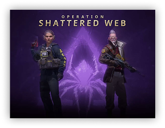
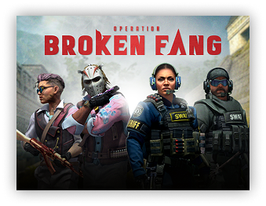
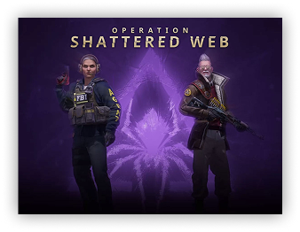
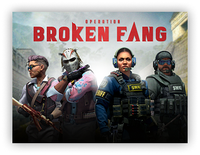
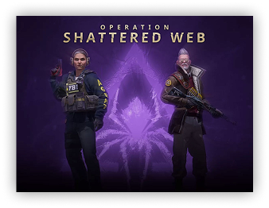
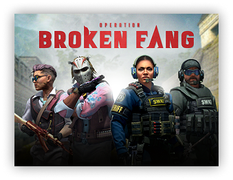
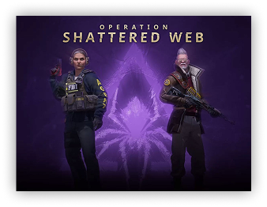
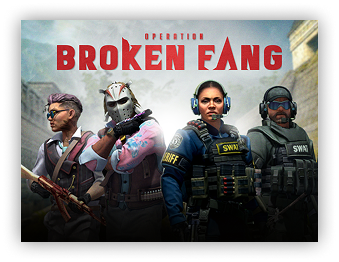

MAJOR UPDATES
 








This weekend, thousands of screaming fans in Antwerp and millions of viewers around the world witnessed the crowning of a new Major Champion. Congratulations to FaZe Clan who proved to be an unstoppable force, taking the Grand Final 2-0. Today we’re releasing the champions autograph capsule, featuring autograph stickers in paper, glitter, holo, and gold. Celebrate rain, karrigan, broky, ropz, and Twistzz by supporting them in style–50% of the proceeds are shared with the

The Legends stage was a brutal test, but eight teams survived and earned their place on the main stage. Congratulations to Team Spirit, ENCE, Copenhagen Flames, FaZe, FURIA, Heroic, Natus Vincere, and Ninjas in Pyjamas. They’ll play out the rest of this event in front of the roaring crowds in Antwerp. Best of luck to all! Matches start Thursday, so you still have a few hours to make your picks in the Pick’Em Challenge. Earn souvenir tokens (or purchase some more), and support for your favorite teams